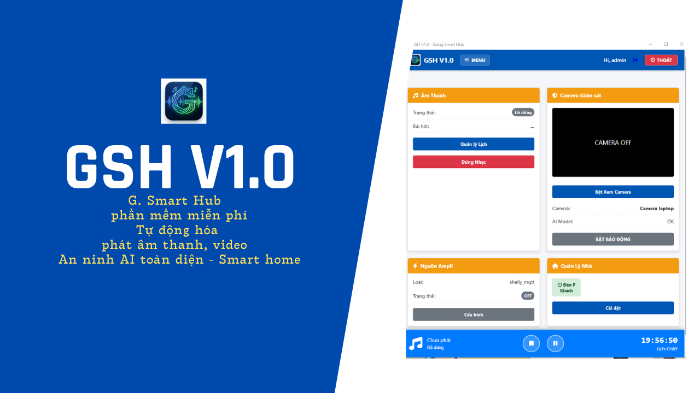

GSH V1.0 (G SMART HUB) HỆ THỐNG QUẢN LÝ TỰ ĐỘNG HÓA THÔNG MINH & GIÁM SÁT AN NINH BẰNG AI
GSH V1.0 (GIANG SMART HUB) HỆ THỐNG QUẢN LÝ TỰ ĐỘNG HÓA
Đăng ngày 28 tháng 11, 2025, bởi tác giả
Tải về ứng dụng GSH V1.0
Bạn có thể tải về ứng dụng GSH V1.0 ( Hãy kéo xuống cuối bài viết để tải phần mềm/pw4gmail1-6).
Xem video trên để tìm hiểu thêm về cách ứng dụng GSH V1.0 hoạt động và các tính năng hữu ích của nó.
📘 Giới thiệu GSH V1.0
Cảm ơn bạn đã tin dùng GSH V1.0 (GIANG SMART HUB). Đây là giải pháp phần mềm "All-in-One"
giúp bạn tự động hóa hệ thống âm thanh, VIDEO, phát tự động theo lịch trình thông minh, quản lý nhà thông minh, giám sát an ninh bằng AI và
quản lý thiết bị điện thông minh ngay trên máy tính.
----------------------------------------------------------------------
I. CÀI ĐẶT & KHỞI ĐỘNG
----------------------------------------------------------------------
1. CÀI ĐẶT:
- Chạy file cài đặt "GSH_V1.0_Setup.exe".
- Cài đặt phần mềm phát nhạc VLC bản 64bit ( vì GSH V1.0 sử dụng thư viện phát nhạc của VLC )- Nhấn Next liên tục để hoàn tất cài đặt.
- Sau khi cài xong, biểu tượng "GSH V1.0" sẽ xuất hiện trên Desktop.
2. KHỞI ĐỘNG LẦN ĐẦU:
- Mở "GSH V1.0" từ Desktop.
- Phần mềm sẽ tự động tạo thư mục dữ liệu "Amthanh" (chứa nhạc,
cấu hình) tại nơi cài đặt hoặc thư mục Documents của bạn.
3. ĐĂNG NHẬP:
- Tài khoản mặc định: admin
- Mật khẩu mặc định: admin
- (Lưu ý: Hãy đổi mật khẩu ngay sau khi đăng nhập để bảo mật).
----------------------------------------------------------------------
II. CÁC TÍNH NĂNG CHÍNH
----------------------------------------------------------------------
1. TỰ ĐỘNG HÓA ÂM THANH (SCHEDULER)
- Lên lịch phát nhạc, thông báo chính xác từng giây.
- Chế độ "Ngẫu nhiên Folder": Tự chọn bài khác nhau mỗi ngày.
- Chế độ "File Cụ thể": Dành cho các bản tin, kinh nguyện cố định.
- **ĐẶC BIỆT:** Hệ thống tự động bật Ampli trước 30 giây (Pre-boot)
để bảo vệ thiết bị, tránh tiếng "bụp" loa.
2. CAMERA AI GIÁM SÁT (SECURITY)
- Biến Webcam thường thành Camera thông minh.
- Tự động phát hiện người (Human Detection) và khoanh vùng đỏ.
- Khi phát hiện xâm nhập:
+ Bật đèn/còi báo động (thông qua thiết bị thông minh).
+ Hú còi cảnh báo qua loa máy tính.
+ Gửi Email cảnh báo (cần cấu hình Email).
3. QUẢN LÝ NHÀ THÔNG MINH (SMART HOME)
- Điều khiển tập trung Cửa cuốn, Đèn, Quạt... trên một màn hình.
- Hỗ trợ đa dạng thiết bị: Shelly, Tuya, Home Assistant, Kasa...
----------------------------------------------------------------------
III. HƯỚNG DẪN CẤU HÌNH
----------------------------------------------------------------------
A. CẤU HÌNH AMPLI (QUAN TRỌNG NHẤT)
- Để tính năng tự động bật/tắt hoạt động, bạn cần khai báo thiết bị:
- Vào Menu -> "Cấu hình Ampli".
- Chọn loại thiết bị bạn đang dùng (Shelly, Tuya, USB Relay...).
- Nhập thông số kết nối (IP, User/Pass, Key...).
- Nhấn "Lưu Cấu Hình".
B. THÊM FILE NHẠC
- Chép nhạc vào thư mục "Amthanh" đã được tạo ra.
- Hoặc dùng chức năng "Quản lý File" trên phần mềm để tải nhạc lên.
- Lưu ý: Các file thông báo cụ thể nên để trong thư mục "FileCuThe".
- *: file báo động, tùy ý muốn - nhưng phải đặt tên chính xác cụ thể là "coi_bao_dong.mp4" hoặc "coi_bao_dong.mp3" Phải để trong thư mục "FileBaoDong".
C. CÀI ĐẶT CAMERA AI
- Vào Menu -> "Cấu hình Camera".
- Chọn Camera mà phần mềm load được (0, 1, 2...) nếu máy có nhiều cam.
- Tại màn hình chính, nhấn "BẬT BÁO ĐỘNG" để kích hoạt chế độ bảo vệ.
- Đặt thời gian "Tắt sau (phút)" để hệ thống tự ngắt báo động sau
một khoảng thời gian, tránh làm phiền hàng xóm.
----------------------------------------------------------------------
IV. LƯU Ý QUAN TRỌNG
----------------------------------------------------------------------
1. TẮT PHẦN MỀM ĐÚNG CÁCH:
- Luôn nhấn nút "THOÁT" màu đỏ ở góc trên bên phải cửa sổ.
- Đợi hệ thống đếm ngược 27 giây để tắt an toàn các thiết bị ngoại vi.
- KHÔNG tắt nóng (End Task) để tránh lỗi dữ liệu hoặc hỏng Ampli.
2. ĐIỀU KHIỂN TỪ XA:
- Bạn có thể dùng điện thoại truy cập vào địa chỉ IP của máy tính
(ví dụ: http://192.168.1.10:5000) để điều khiển hệ thống từ xa
khi ở cùng mạng Wifi.
3. 📘THÔNG TIN TÁC GIẢ & HỖ TRỢ
Phần mềm được xây dựng với tinh thần phục vụ, đóng góp công sức nhỏ bé vào công việc chung của xã hội. Mọi thắc mắc, báo lỗi hoặc góp ý nâng cấp, xin vui lòng liên hệ:
Tác giả: Trần Hoàng Giang
Email: tranhoanggiang@gmail.com
Ngày phát hành phiên bản GSH V1.0: 28/11/2025
Kính chúc Quý Vị luôn tràn đầy Hồng Ân Thiên Chúa và sử dụng phần mềm thật hiệu quả!
(Bản quyền phần mềm thuộc về tác giả Trần Hoàng Giang)
📩Mọi góp ý/ phát triển/Psw / psw giải nén file cài đặt... xin liên hệ :
tranhoanggiang@gmail.com
link Tải về GSH_Setup.rar ...Buy Me a Coffee to : tranhoanggiang@gmail.com